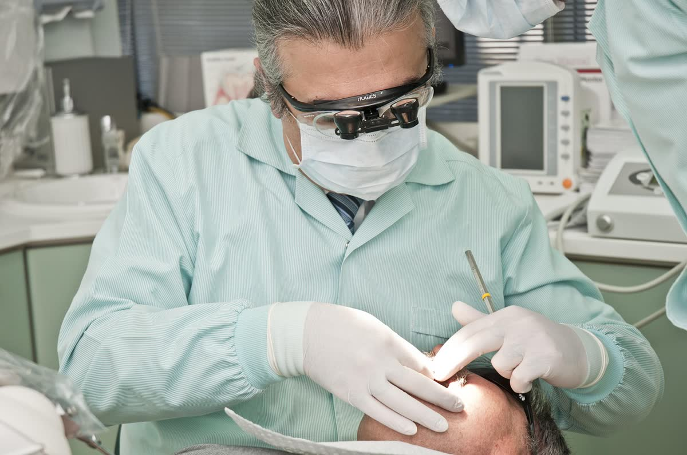
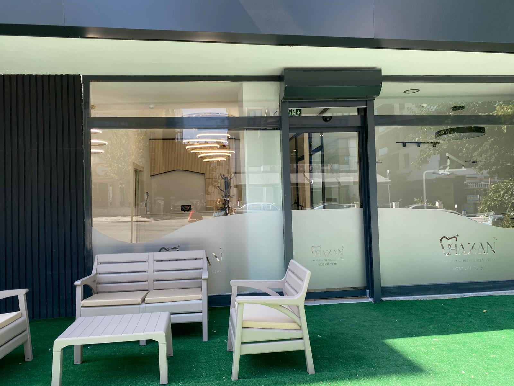
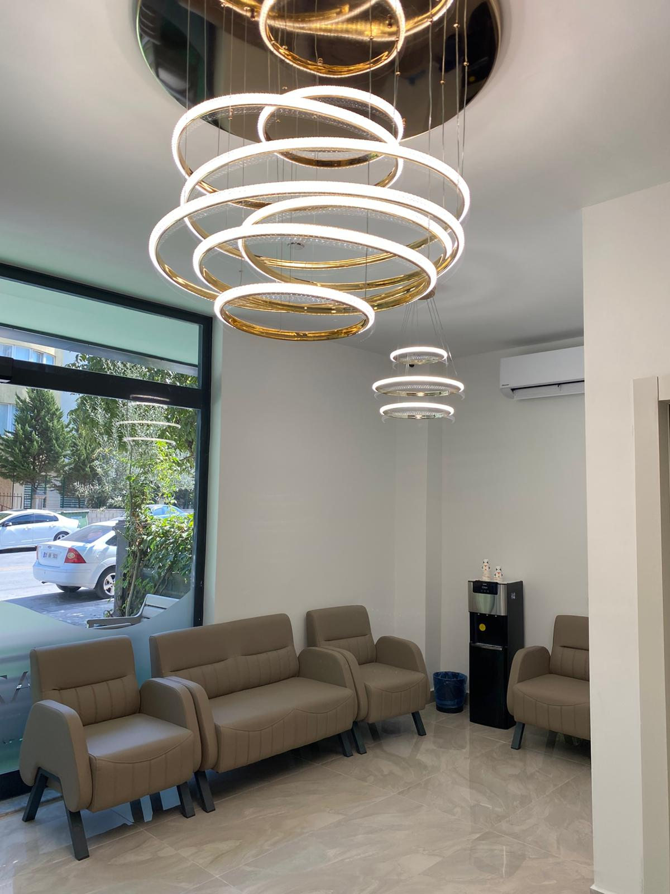
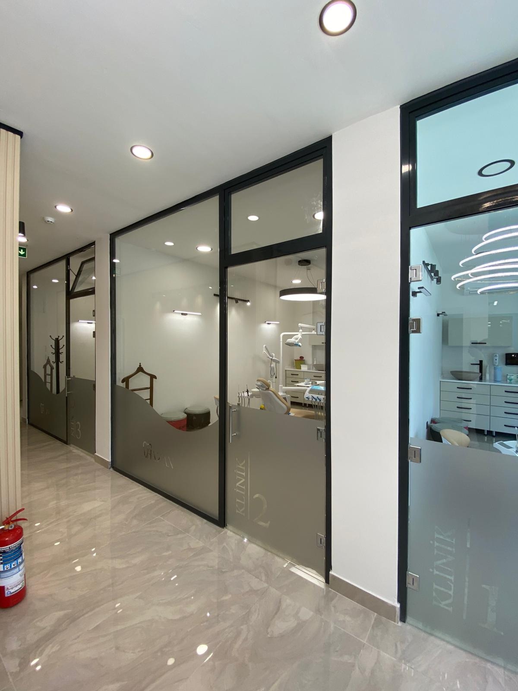
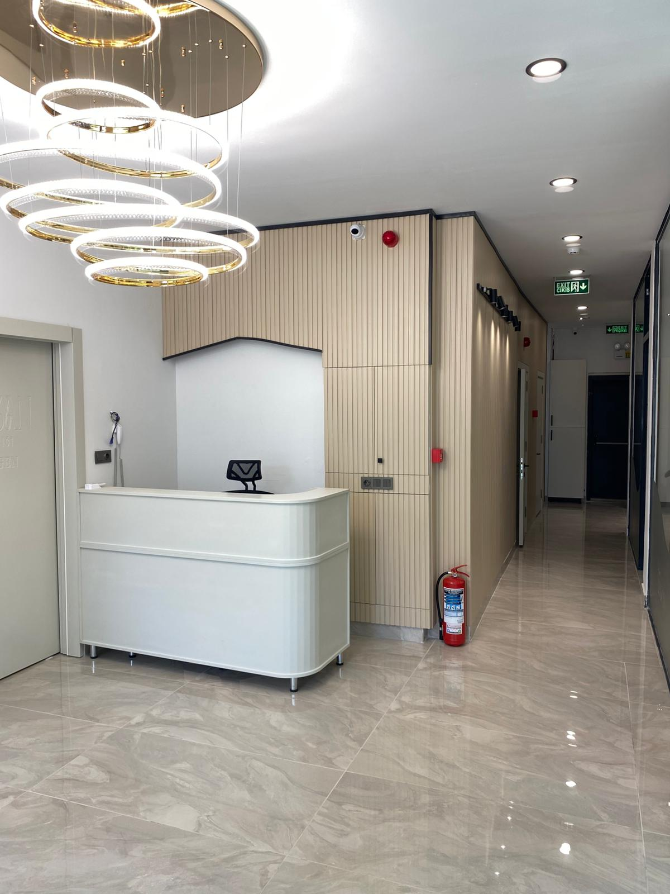

Merkezefendi · Denizli · Diş Kliniği
Hazan Ağız ve Diş Sağlığı Polikliniği olarak, sağlığınızı ön planda tutan profesyonel yaklaşımımızla hizmetinizdeyiz. Tedavi süreçlerimizde şeffaf bilgilendirme ve hijyenik klinik ortamı esas alıyoruz.

Tedavilerinizi seçin: tahmini fiyat aralığı, Antalya'da kalmanız gereken gün ve gün gün planınız anında çıksın.
Çürük dişlerin temizlenerek uygun materyallerle restore edilmesi işlemidir.
Diş yüzeyinde biriken plak ve diş taşlarının uzman ellerle temizlenmesi.
Dişin iç kısmındaki hasarlı dokuların temizlenerek kök kanalının doldurulması.
Diş minesinde oluşan renk değişimlerinin giderilmesi için uygulanan işlemler.
Kaybedilen dişlerin fonksiyonunu geri kazandırmak için yapılan sabit veya hareketli protezler.
Çocukların ağız ve diş sağlığının korunması ve tedavi süreçlerinin takibi.




Tedaviye başlamadan önce tüm süreç hakkında sizi bilgilendiriyor, sorularınızı yanıtlıyoruz.
Her bir diş tedavisi sürecini özenle ve dikkatle yürütmeye gayret ediyoruz.
Klinik atmosferimizi hastalarımızın huzurlu hissetmesi için modern bir şekilde düzenledik.
Diş hekimliği uygulamalarımızı profesyonel ve nazik bir ekiple sunuyoruz.
📍 Merkez Efendi, Fatih Cd. 78 A, 20010 Denizli Merkezefendi/Denizli
🕑 Pzt–Paz 09:00–00:00